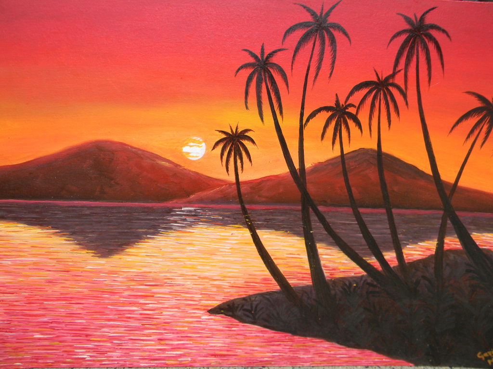
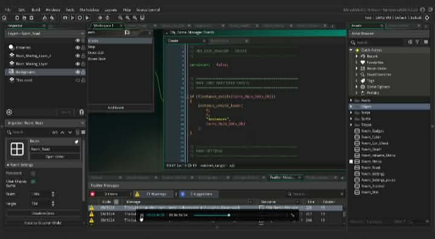

What I’m interested in
Game development, art, visual design, and the creative process behind games.
Artist · Aspiring game developer
I’m a 22-year-old artist interested in game development. I enjoy drawing and design, and I’m excited to keep learning how visual ideas can help bring imaginative worlds and games to life.
Explore my work
“Keep creating—every small step brings your ideas closer to life.”
A little about me
I’m 22, and I enjoy drawing, exploring visual ideas, and learning about game development. I’m curious about how art can help tell stories and bring imaginative worlds to life. I’m continuing to grow my drawing and design skills as I explore these interests.
Game development, art, visual design, and the creative process behind games.
I’m at the learning stage, building on my drawing and design abilities and looking for opportunities to practice.
My current abilities
Here’s an honest snapshot of what I can do today and what I’m exploring next.
I can draw and use sketches to explore and communicate visual ideas.
I enjoy arranging visual elements and making creative choices to give an idea a clear look and feel.
I’m interested in applying my art and design skills to games, and I’m continuing to learn how to develop that work.
Selected work

Work in progressAbout: I’m learning game development by exploring a game editor and working with code and project assets.
My contribution: I worked directly in the editor shown, practicing with its code editor and project tools.
Project link: Not available yet.
Get in touch
For a friendly hello or a conversation about art and game development, you can reach me at maryannawing14@gmail.com.